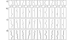
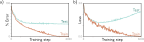
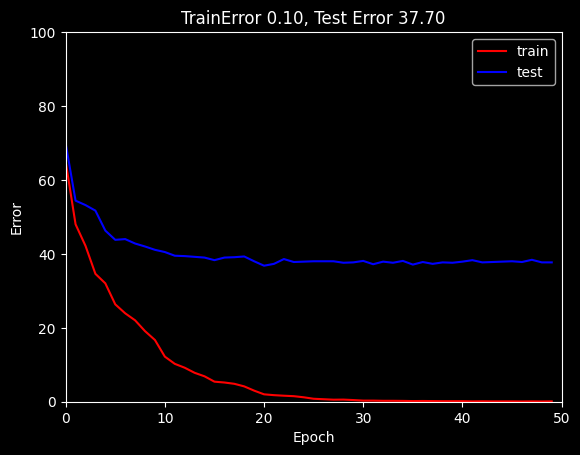
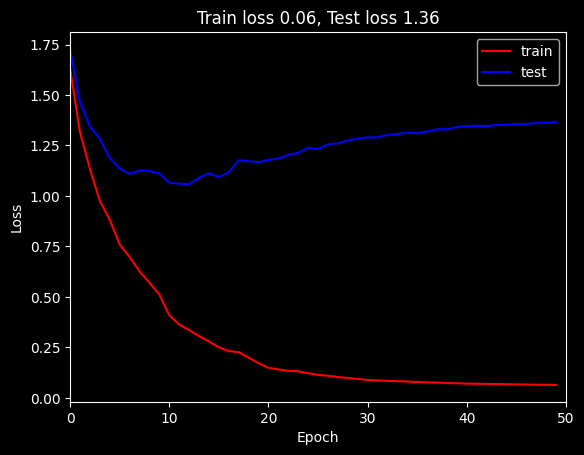

Here we consider how to measure the performance of the trained models.
The overarching goal is Generalization. That is, we want our trained models to perform well not just on the training data but also on unseen test data. With sufficient capacity (i.e., number of hidden units), a neural network model will often perform perfectly on the training data. However, this does not necessarily mean it will generalize well to new test data.
We will see that the test errors have three distinct causes and that their relative contributions depend on
Inherent uncertainty in the task
Amount of training data
Choice of model
This raises the issue of hyperparameter search. We discuss how to select both the model hyperparameters (e.g., the number of hidden layers and the number of hidden units in each) and the learning algorithm hyperparameters (e.g., the learning rate and batch size).
Train, Validation, and Test Splits
In supervised learning, it is common practice to split the available dataset into three separate sets. Note that the percentages are approximate and the exact split may vary depending on the dataset and the specific requirements of the task.
Also the three sets should be mutually exclusive, meaning that no data point should appear in more than one set.
Training set
Around 60-70% of randomly selected data, used to fit the model parameters. The training set is used to learn the model parameters using gradient-based optimization methods such as stochastic gradient descent (SGD) during the training process. Think of training as studying for an exam.
Validation set
Around 10-20% of remaining data, used to tune hyperparameters and make decisions about the model architecture. The validation set is used to tune hyperparameters and make decisions about the model architecture. Compare different numbers of layers or neurons; choose when to stop training. For example, you might train several models with different configurations such as varying the number of hidden layers, the number of neurons in each layer, and learning rates. Then pick the one that performs best on the validation set.
Think of validation as taking practice exams to gauge your readiness.
Test set
Around 20% of the data that is left after selecting the training and validation sets, used to evaluate the final model’s generalization performance. Think of testing as taking the final exam. Evaluate the final chosen model | Measure its accuracy after those choices are complete |
Loss and Error for Train vs. Test sets
We explore model performance using the MNIST-1D dataset (figure below).

This consists of ten classes \(y \in \{0,1,...,9\}\), representing the digits 0–9.
Each of the 10 digits has a 12-dimensional vector template. The template represents the typical shape of the corresponding digit in one dimension. From these 10 templates, the training examples are generated by applying random transformations and adding noise.
In particular, first padding is randomly added to top and bottom of the template (panel b), and then the template is shifted horizontally by a random amount (panel c).
The horizontal offset of the transformed template is then sampled at 40 vertical positions (panel d).
The full training dataset \(\{x_i,y_i\}\) consists of \(I= 4000\) training examples, each consisting of \(D_i = 40\) dimensions representing the horizontal offset at 40 positions.
The ten classes are drawn uniformly during data generation, so there are∼400 examples of each class.
# Run this if you're in a Colab to install MNIST 1D repository%pip install git+https://github.com/greydanus/mnist1d
Collecting git+https://github.com/greydanus/mnist1d
Cloning https://github.com/greydanus/mnist1d to /private/var/folders/l9/y8y3rmys2sl93tzzph3dl7jw0000gr/T/pip-req-build-tfwbj0kf
Running command git clone -q https://github.com/greydanus/mnist1d /private/var/folders/l9/y8y3rmys2sl93tzzph3dl7jw0000gr/T/pip-req-build-tfwbj0kf
Installing build dependencies ... done
Getting requirements to build wheel ... done
Preparing wheel metadata ... done
Requirement already satisfied: requests in /Users/fsultan/opt/anaconda3/lib/python3.9/site-packages (from mnist1d==0.0.2.post16) (2.32.3)
Requirement already satisfied: scipy in /Users/fsultan/opt/anaconda3/lib/python3.9/site-packages (from mnist1d==0.0.2.post16) (1.11.4)
Requirement already satisfied: matplotlib in /Users/fsultan/opt/anaconda3/lib/python3.9/site-packages (from mnist1d==0.0.2.post16) (3.9.4)
Requirement already satisfied: numpy in /Users/fsultan/opt/anaconda3/lib/python3.9/site-packages (from mnist1d==0.0.2.post16) (1.23.5)
Requirement already satisfied: packaging>=20.0 in /Users/fsultan/opt/anaconda3/lib/python3.9/site-packages (from matplotlib->mnist1d==0.0.2.post16) (24.1)
Requirement already satisfied: python-dateutil>=2.7 in /Users/fsultan/opt/anaconda3/lib/python3.9/site-packages (from matplotlib->mnist1d==0.0.2.post16) (2.9.0.post0)
Requirement already satisfied: importlib-resources>=3.2.0 in /Users/fsultan/opt/anaconda3/lib/python3.9/site-packages (from matplotlib->mnist1d==0.0.2.post16) (6.5.2)
Requirement already satisfied: pillow>=8 in /Users/fsultan/opt/anaconda3/lib/python3.9/site-packages (from matplotlib->mnist1d==0.0.2.post16) (9.0.1)
Requirement already satisfied: pyparsing>=2.3.1 in /Users/fsultan/opt/anaconda3/lib/python3.9/site-packages (from matplotlib->mnist1d==0.0.2.post16) (3.2.5)
Requirement already satisfied: fonttools>=4.22.0 in /Users/fsultan/opt/anaconda3/lib/python3.9/site-packages (from matplotlib->mnist1d==0.0.2.post16) (4.25.0)
Requirement already satisfied: contourpy>=1.0.1 in /Users/fsultan/opt/anaconda3/lib/python3.9/site-packages (from matplotlib->mnist1d==0.0.2.post16) (1.1.0)
Requirement already satisfied: kiwisolver>=1.3.1 in /Users/fsultan/opt/anaconda3/lib/python3.9/site-packages (from matplotlib->mnist1d==0.0.2.post16) (1.3.2)
Requirement already satisfied: cycler>=0.10 in /Users/fsultan/opt/anaconda3/lib/python3.9/site-packages (from matplotlib->mnist1d==0.0.2.post16) (0.11.0)
Requirement already satisfied: zipp>=3.1.0 in /Users/fsultan/opt/anaconda3/lib/python3.9/site-packages (from importlib-resources>=3.2.0->matplotlib->mnist1d==0.0.2.post16) (3.20.0)
Requirement already satisfied: six>=1.5 in /Users/fsultan/opt/anaconda3/lib/python3.9/site-packages (from python-dateutil>=2.7->matplotlib->mnist1d==0.0.2.post16) (1.16.0)
Requirement already satisfied: certifi>=2017.4.17 in /Users/fsultan/opt/anaconda3/lib/python3.9/site-packages (from requests->mnist1d==0.0.2.post16) (2024.7.4)
Requirement already satisfied: idna<4,>=2.5 in /Users/fsultan/opt/anaconda3/lib/python3.9/site-packages (from requests->mnist1d==0.0.2.post16) (3.8)
Requirement already satisfied: charset-normalizer<4,>=2 in /Users/fsultan/opt/anaconda3/lib/python3.9/site-packages (from requests->mnist1d==0.0.2.post16) (3.3.2)
Requirement already satisfied: urllib3<3,>=1.21.1 in /Users/fsultan/opt/anaconda3/lib/python3.9/site-packages (from requests->mnist1d==0.0.2.post16) (2.2.2)
Building wheels for collected packages: mnist1d
Building wheel for mnist1d (PEP 517) ... done
Created wheel for mnist1d: filename=mnist1d-0.0.2.post16-py3-none-any.whl size=14664 sha256=015728f879e58e4deedddc55b6cdb0cc43f05f1b0713cf426e154aa7f62e363e
Stored in directory: /private/var/folders/l9/y8y3rmys2sl93tzzph3dl7jw0000gr/T/pip-ephem-wheel-cache-ai3xx7gm/wheels/c4/34/e0/a3b4376888d7486638e921a69788a6309c58168eb2b2183b5b
Successfully built mnist1d
Installing collected packages: mnist1d
Successfully installed mnist1d-0.0.2.post16
Note: you may need to restart the kernel to use updated packages.
import mnist1dargs = mnist1d.data.get_dataset_args()data = mnist1d.data.get_dataset(args, path='./mnist1d_data.pkl', download=False, regenerate=False)# The training and test input and outputs are in# data['x'], data['y'], data['x_test'], and data['y_test']print("Examples in training set: {}".format(len(data['y'])))print("Examples in test set: {}".format(len(data['y_test'])))print("Length of each example: {}".format(data['x'].shape[-1]))
Successfully loaded data from ./mnist1d_data.pkl
Examples in training set: 4000
Examples in test set: 4000
Length of each example: 40
We use a network with \(D_i = 40\) inputs and \(D_o = 10\) outputs which are passed through a softmax function to produce class probabilities.
The network has two hidden layers with \(D= 100\) hidden units each. It is trained using stochastic gradient descent with batch size 100 and learning rate 0.1 for 6000 steps (150 epochs) with a multiclass cross-entropy loss.
Figure below shows that the training error decreases as training proceeds.
The training data are classified perfectly after about 4000 steps. The training loss also decreases, eventually approaching zero. However, this doesn’t imply that the classifier is perfect; the model might have memorized the training set but be unable to predict new examples.
This phenomenon is known as Overfitting, where the model performs well on the training data but fails to generalize to unseen test data.
To estimate the true performance, we need a separate test set of input/output pairs \(\{x_i,y_i\}\).
To this end, we generate 1000 more examples using the same process.
Figure below also shows the errors for this test data as a function of the training step. These decrease as training proceeds, but only to around 40%.
This is better than the chance error rate of 90% but far worse than for the training set; the model has not generalized well to the test data.
The test loss decreases for the first 1500 training steps but then increases again.
At this point, the test error rate is fairly constant; the model makes the same mistakes but with increasing confidence.
This decreases the probability of the correct answers and thus increases the negative log-likelihood.
This increasing confidence is a side-effect of the softmax function; the pre-softmax activations are driven to increasingly extreme values to make the probability of the training data approach one (see figure 5.10).

MNIST-1D results.
Percent classification error as a function of the training step. The training set errors decrease to zero, but the test errors do not drop below ∼ 40%. This model doesn’t generalize well to new test data.
Loss as a function of the training step. The training loss decreases steadily toward zero. The test loss decreases at first but subsequently increases as the model becomes increasingly confident about its (wrong) predictions.
from torch.utils.data import TensorDataset, DataLoaderfrom torch.optim.lr_scheduler import StepLRimport numpy as npimport matplotlib.pyplot as pltplt.style.use('dark_background')def weights_init(layer_in):# Initialize the parameters with He initializationifisinstance(layer_in, torch.nn.Linear): torch.nn.init.kaiming_normal_(layer_in.weight, nonlinearity='relu')if layer_in.bias isnotNone: torch.nn.init.constant_(layer_in.bias, 0)print("Initializing layer")return layer_in# Call the function you just definedmodel.apply(weights_init)# choose cross entropy loss function (equation 5.24)loss_function = torch.nn.CrossEntropyLoss()# construct SGD optimizer and initialize learning rate and momentumoptimizer = torch.optim.SGD(model.parameters(), lr =0.05, momentum=0.9)# object that decreases learning rate by half every 10 epochsscheduler = StepLR(optimizer, step_size=10, gamma=0.5)x_train = torch.tensor(data['x'].astype('float32'))y_train = torch.tensor(data['y'].transpose().astype('int64'))x_test = torch.tensor(data['x_test'].astype('float32'))y_test = torch.tensor(data['y_test'].astype('int64'))# load the data into a class that creates the batchesdata_loader = DataLoader(TensorDataset(x_train,y_train), batch_size=100, shuffle=True, worker_init_fn=np.random.seed(1))# Initialize model weightsmodel.apply(weights_init)# loop over the dataset n_epoch timesn_epoch =50# store the loss and the % correct at each epochlosses_train = np.zeros((n_epoch))errors_train = np.zeros((n_epoch))losses_test = np.zeros((n_epoch))errors_test = np.zeros((n_epoch))for epoch inrange(n_epoch):# loop over batchesfor i, batch inenumerate(data_loader):# retrieve inputs and labels for this batch x_batch, y_batch = batch# zero the parameter gradients optimizer.zero_grad()# forward pass -- calculate model output pred = model(x_batch)# compute the loss loss = loss_function(pred, y_batch)# backward pass loss.backward()# SGD update optimizer.step()# Run whole dataset to get statistics -- normally wouldn't do this pred_train = model(x_train) pred_test = model(x_test) _, predicted_train_class = torch.max(pred_train.data, 1) _, predicted_test_class = torch.max(pred_test.data, 1) errors_train[epoch] =100-100* (predicted_train_class == y_train).float().sum() /len(y_train) errors_test[epoch] =100-100* (predicted_test_class == y_test).float().sum() /len(y_test) losses_train[epoch] = loss_function(pred_train, y_train).item() losses_test[epoch] = loss_function(pred_test, y_test).item()print(f'Epoch {epoch:5d}, train loss {losses_train[epoch]:.6f}, train error {errors_train[epoch]:3.2f}, test loss {losses_test[epoch]:.6f}, test error {errors_test[epoch]:3.2f}')# tell scheduler to consider updating learning rate scheduler.step()# Plot the resultsfig, ax = plt.subplots()ax.plot(errors_train,'r-',label='train')ax.plot(errors_test,'b-',label='test')ax.set_ylim(0,100); ax.set_xlim(0,n_epoch)ax.set_xlabel('Epoch'); ax.set_ylabel('Error')ax.set_title('TrainError %3.2f, Test Error %3.2f'%(errors_train[-1],errors_test[-1]))ax.legend()plt.show()# Plot the resultsfig, ax = plt.subplots()ax.plot(losses_train,'r-',label='train')ax.plot(losses_test,'b-',label='test')ax.set_xlim(0,n_epoch)ax.set_xlabel('Epoch'); ax.set_ylabel('Loss')ax.set_title('Train loss %3.2f, Test loss %3.2f'%(losses_train[-1],losses_test[-1]))ax.legend()plt.show()
Successfully loaded data from ./mnist1d_data.pkl
Examples in training set: 4000
Examples in test set: 1000
Length of each example: 40
Initializing layer
Initializing layer
Initializing layer
Initializing layer
Initializing layer
Initializing layer
Initializing layer
Initializing layer
Initializing layer
Initializing layer
Initializing layer
Initializing layer
Epoch 0, train loss 1.631942, train error 64.97, test loss 1.728119, test error 69.90
Epoch 1, train loss 1.316437, train error 48.00, test loss 1.465787, test error 54.40
Epoch 2, train loss 1.134730, train error 42.17, test loss 1.344437, test error 53.20
Epoch 3, train loss 0.976043, train error 34.60, test loss 1.283102, test error 51.70
Epoch 4, train loss 0.883144, train error 32.03, test loss 1.187499, test error 46.30
Epoch 5, train loss 0.759807, train error 26.35, test loss 1.137146, test error 43.80
Epoch 6, train loss 0.698245, train error 23.93, test loss 1.108688, test error 44.00
Epoch 7, train loss 0.626771, train error 22.03, test loss 1.126183, test error 42.80
Epoch 8, train loss 0.570338, train error 19.10, test loss 1.123737, test error 42.00
Epoch 9, train loss 0.512352, train error 16.70, test loss 1.111465, test error 41.10
Epoch 10, train loss 0.409381, train error 12.20, test loss 1.065406, test error 40.50
Epoch 11, train loss 0.363579, train error 10.25, test loss 1.060693, test error 39.50
Epoch 12, train loss 0.336029, train error 9.20, test loss 1.058398, test error 39.40
Epoch 13, train loss 0.306218, train error 7.82, test loss 1.089240, test error 39.20
Epoch 14, train loss 0.279142, train error 6.88, test loss 1.111818, test error 39.00
Epoch 15, train loss 0.250960, train error 5.43, test loss 1.093373, test error 38.30
Epoch 16, train loss 0.232400, train error 5.20, test loss 1.117872, test error 39.00
Epoch 17, train loss 0.226077, train error 4.85, test loss 1.176225, test error 39.10
Epoch 18, train loss 0.199455, train error 4.15, test loss 1.172413, test error 39.30
Epoch 19, train loss 0.171886, train error 3.00, test loss 1.166691, test error 38.00
Epoch 20, train loss 0.148746, train error 2.00, test loss 1.178492, test error 36.80
Epoch 21, train loss 0.141197, train error 1.78, test loss 1.185017, test error 37.30
Epoch 22, train loss 0.133698, train error 1.62, test loss 1.203514, test error 38.60
Epoch 23, train loss 0.132200, train error 1.50, test loss 1.213150, test error 37.80
Epoch 24, train loss 0.121890, train error 1.20, test loss 1.238157, test error 37.90
Epoch 25, train loss 0.113802, train error 0.80, test loss 1.232786, test error 38.00
Epoch 26, train loss 0.109463, train error 0.68, test loss 1.255636, test error 38.00
Epoch 27, train loss 0.103238, train error 0.55, test loss 1.260253, test error 38.00
Epoch 28, train loss 0.098715, train error 0.57, test loss 1.275169, test error 37.60
Epoch 29, train loss 0.094078, train error 0.45, test loss 1.283961, test error 37.70
Epoch 30, train loss 0.088601, train error 0.30, test loss 1.290790, test error 38.10
Epoch 31, train loss 0.086605, train error 0.30, test loss 1.289708, test error 37.20
Epoch 32, train loss 0.084400, train error 0.25, test loss 1.302295, test error 37.90
Epoch 33, train loss 0.082512, train error 0.25, test loss 1.306197, test error 37.60
Epoch 34, train loss 0.080989, train error 0.22, test loss 1.313281, test error 38.10
Epoch 35, train loss 0.078772, train error 0.18, test loss 1.310136, test error 37.10
Epoch 36, train loss 0.076933, train error 0.20, test loss 1.319014, test error 37.80
Epoch 37, train loss 0.076030, train error 0.18, test loss 1.330156, test error 37.30
Epoch 38, train loss 0.073641, train error 0.15, test loss 1.329743, test error 37.70
Epoch 39, train loss 0.072203, train error 0.15, test loss 1.340852, test error 37.60
Epoch 40, train loss 0.070730, train error 0.15, test loss 1.345814, test error 37.90
Epoch 41, train loss 0.069930, train error 0.10, test loss 1.347626, test error 38.30
Epoch 42, train loss 0.069411, train error 0.12, test loss 1.346499, test error 37.70
Epoch 43, train loss 0.068414, train error 0.10, test loss 1.350982, test error 37.80
Epoch 44, train loss 0.067677, train error 0.10, test loss 1.351785, test error 37.90
Epoch 45, train loss 0.066888, train error 0.10, test loss 1.356465, test error 38.00
Epoch 46, train loss 0.066230, train error 0.07, test loss 1.356053, test error 37.80
Epoch 47, train loss 0.065529, train error 0.10, test loss 1.362333, test error 38.40
Epoch 48, train loss 0.064851, train error 0.07, test loss 1.361882, test error 37.70
Epoch 49, train loss 0.064264, train error 0.10, test loss 1.364452, test error 37.70


Increasing Loss vs. Stable Error
In some cases, the test loss may continue to increase even though the test error remains stable. This phenomenon occurs because the model becomes increasingly confident about its predictions, driving the pre-softmax activations to extreme values. As a result, the cross-entropy loss increases while the classification error does not change significantly.
This behavior is particularly common in over-parameterized models, where the network has enough capacity to fit the training data perfectly. While the training loss continues to decrease, the test loss may increase due to overfitting, even though the test error remains relatively stable.